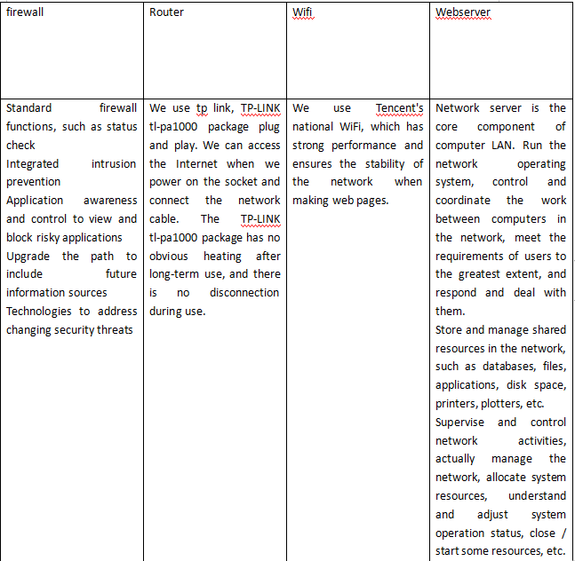

My IT project is to build a website to store personal information, describe my personal information and give future employers access and understanding. The software needed for this project is a perfect personal information website.
The first core value of the project of establishing the website is authenticity, authenticity, reliability and high reliability. It is the first goal and core idea of our website to give visitors the most authentic information and facilitate their use. Authenticity is very important. For our website, when registrants learn to look at themselves truthfully, they know that they are not omnipotent. After they look at their strengths and weaknesses truthfully, they can look at problems more objectively. This is an test for registrants. We will verify the identity of the website registrants. Only after the official verification can we register through the inspection of the website. We will verify the website registrants through regular updates. This is the operation mode of our website.


| problem | answer |
|---|---|
| Name this system? | Drawing of personal information website |
| What are the system objectives? | Fill in and save personal information, protect the privacy of personal information, and provide contact information for future employers. |
| List 3 essential system features and components? | The goal of this system is to create a concise and reliable personal information website for future employers and potential employers, improve the employment rate of website users and facilitate users' job hunting.System components include CPU, input device and output device. |
| List 3 essential hardware from this system. | One host, one domain name and one central server. |
| List 3 essential software from this system. | Choose a basic text or HTML editor, a popular browser, and a graphic editor. |
| List 2 external system components. | Keyboard and mouse |
| List 2 system benefits | High authenticity and credibility, fast update speed of the website. |
| List 2 project difficulties | The number of visitors to the project website is small, and the website is too simple. |
| problem | answer |
|---|---|
| Name this system? | Drawing of personal information website |
| What are the system objectives? | Get more attention from potential employers and provide more employment opportunities for website users. |
| List 3 essential system features and components? | The concise website drawing will attract more employers' attention and provide a basis for the subsequent profits of the enterprise.System components include CPU, input device and output device. |
| List 3 essential hardware from this system. | One host, one domain name and one central server. |
| List 3 essential software from this system. | Choose a basic text or HTML editor, a popular browser, and a graphic editor. |
| List 2 external system components. | Display and camera |
| List 2 system benefits | The website runs fast and the website content is updated quickly. |
| List 2 project difficulties | The aesthetic degree of the web page is not high, and the browsing volume of the website is small. |